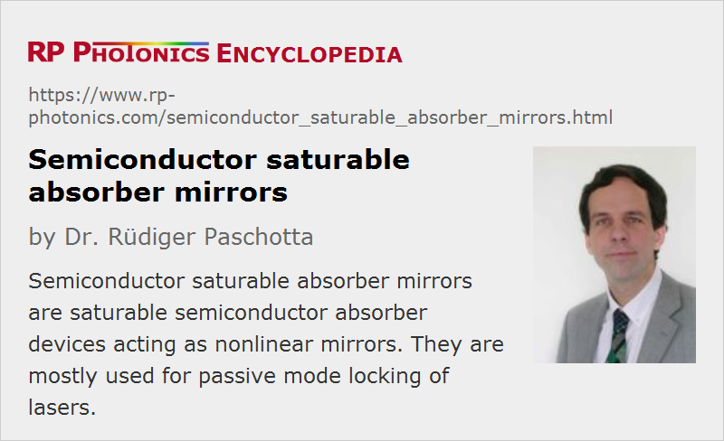

Semiconductor Saturable Absorber Mirrors
Acronym: SESAM
Definition: saturable semiconductor absorber devices acting as nonlinear mirrors
Alternative term: saturable Bragg reflectors
More general term: saturable absorbers
German: sättigbare Halbleiterspiegel
Categories: photonic devices, light pulses
How to cite the article; suggest additional literature
Author: Dr. Rüdiger Paschotta
A semiconductor saturable absorber mirror (SESAM) (or simply SAM = saturable absorber mirror) is a mirror structure with an incorporated saturable absorber, all made in semiconductor technology. Such devices are mostly used for the generation of ultrashort pulses by passive mode locking of various types of lasers.
Typical Structure of a SESAM
Typically, a SESAM contains a semiconductor Bragg mirror and (near the surface) a single quantum well absorber layer. The materials of the Bragg mirror have a larger band gap energy, so that essentially no absorption occur in that region. Such SESAMs are sometimes also called saturable Bragg reflectors (SBRs). For obtaining a large modulation depth, as required e.g. for passive Q switching, a thicker absorber layer can be used. Also, a suitable passivation layer on the top surface can increase the device lifetime.
The penetration of the optical field into a SESAM can be calculated with the same matrix method as applied to other types of dielectric mirrors. Of particular importance is the optical intensity in the region where the saturable material is placed. This influences the modulation depth and also the saturation fluence (see below). However, the design of the structure also influences the bandwidth and the chromatic dispersion.
Typically, an absorber layer is placed in an anti-node of the electric field (as in Figure 2). That leads to maximum saturable absorption and the smallest possible saturation fluence. If multiple absorber layers are required for a high modulation depth, they may be placed in separate anti-nodes, or possibly several of them near one anti-node.
There are also some more exotic types of semiconductor saturable absorbers, which can be based on, e.g., quantum dots embedded in glass [10, 12] or on carbon nanotubes [13] or graphene [26, 27].
Resonant and Nonresonant SESAM Designs
As there is a Fresnel reflection at the semiconductor–air interface, this together with the Bragg reflection leads to a cavity effect (resonance effect). In most cases, this cavity is designed to be antiresonant for the operation wavelength of the device (see also Figure 2). Such devices exhibit a relatively broad wavelength range with a more or less constant degree of saturable absorption and with small chromatic dispersion. Compared with devices with an anti-reflection coating, antiresonant designs have a lower field penetration into the absorber and thus a lower modulation depth in addition to a higher saturation fluence and higher damage threshold. (The latter, however, is no advantage, because a higher incident pulse fluence is needed to saturate such a device.)
In relatively rare cases, resonant designs are used. These have a higher modulation depth and lower saturation fluence, and a smaller range of operation wavelengths.
By varying the material composition and certain design parameters, the macroscopic parameters of a SESAM (in particular, the operation wavelength, the modulation depth, the saturation fluence, and the recovery time) can be tailored for operation in very different regimes.
Physical Mechanism of Saturable Absorption
The saturable absorption is related to an interband transition: the energy of absorbed photons is transferred to electrons, which are brought from the valence band to the conduction band. There is first some fairly rapid thermalization relaxation within the conduction and valence band within e.g. 50–100 fs, and later (often on a time scale of tens or hundreds of picoseconds) the carriers recombine, often with the aid of crystal defects.
For low optical intensities, the degree of electronic excitation is small, and the absorption remains unsaturated. At high optical intensities, however, electrons can accumulate in the conduction band, so that initial states for the absorbing transition are depleted while final states are occupied (Pauli blocking). Therefore, the absorption is reduced. After saturation with a short pulse, the absorption recovers, first partially due to intraband thermal relaxation, and later completely via recombination.

Important Properties of SESAMs
The most important characteristics of a SESAM as used e.g. for passive mode locking or Q switching are the following:
- The modulation depth is the maximum nonlinear change in reflectivity. It depends on the thickness of the absorber, the material, the optical wavelength, and the degree of optical field penetration into the absorber structure.
- The saturation fluence is the fluence of an incident short pulse which is required for causing significant absorption saturation. It depends on the absorber material, the wavelength, and the field penetration into the absorber structure. Also, there can be a “roll-over” of the saturation curve (i.e. a reduction in reflectivity for high fluence values), which can be caused by two-photon absorption (for sub-picosecond pulses) or by other effects.
- The recovery time is the exponential time constant of absorption recovery after a saturating pulse. It is normally between a few picoseconds and hundreds of picoseconds. Note, however, that the recovery is often not of exponential form (see Figure 4). The recovery time is strongly influenced by the defect density in the absorber, and possibly in nearby structures.
- There are normally some nonsaturable losses, which are unwanted, since they only lead to device heating while not contributing to the pulse shaping. Generally, nonsaturable losses tend to be higher for SESAMs with a larger modulation depth and faster recovery, but there are exceptions.
Additional details concern the lateral homogeneity, the group delay dispersion (see below), the optical damage threshold and the device lifetime, also the suitability for high-power operation (see below). The lifetime of a SESAM is often difficult to assess and depends strongly on the operating conditions. Furthermore, it can be important that a SESAM can tolerate a certain heat load. Thermal issues become important not only at high average power levels, but also for operation with very high pulse repetition rates.
Semiconductor Materials for SESAMs
By far the most common type of SESAM is used in lasers emitting in the 1-μm wavelength region. Here, the saturable absorber is an InGaAs quantum well (or sometimes multiple quantum wells), where the indium content is adjusted to achieve an appropriate value of the bandgap energy. The mirror structure is based on GaAs and AlAs, grown on a gallium arsenide wafer. The lattice mismatch of InGaAs on GaAs and AlAs causes significant compressive strain in the absorber layer. Particularly for high indium contents, this can cause the formation of defects. The effect of defects may even be helpful, as it reduces the recovery time and may thus allow for shorter pulses and better pulse stability in a mode-locked laser. The defect concentration is therefore often increased by low-temperature growth of the absorber layer. For too low growth temperature and/or a high indium content, however, nonsaturable losses can become too high. The recovery time may also be reduced by bombardment with fast ions after growth (ion implantation). Partial annealing of defects at some elevated temperature can help to find a better compromise between nonsaturable losses and recovery time.
For use at shorter wavelengths, e.g. for passive mode locking of titanium–sapphire lasers emitting around 800 nm, GaAs quantum wells can be used. The use of GaAs then has to be avoided in the mirror structure; it is common to use a Bragg mirror made of AlGaAs/AlAs. For very short pulse durations, the reflectivity bandwidth of a Bragg mirror is not sufficient; in such cases, special broadband SESAM designs containing a metallic mirror are sometimes used.
At longer wavelengths such as the bands around 1.3 or 1.5 μm, InGaAs quantum wells can still be used, but they then have a very high built-in strain. Therefore, GaInNAs (dilute nitride) absorbers have been developed, which allow for very low nonsaturable losses. It is also possible to use indium phosphide-based absorbers in devices grown on InP wafers. Various types of Bragg mirrors are used in the 1.5-μm region, partially depending on the type of absorber layer.
SESAMs for High-power Operation
There are passively mode-locked high-power lasers with average output powers of well above 100 W and intracavity average powers of well above 1 kW. A SESAM used in such a laser will typically absorb between 0.2% and 2% of the incident power, and this can give rise to substantial thermal effects. In particular, there can be substantial thermal lensing, which affects the mode properties of the laser resonator. Also, the temperature increase may lead to accelerated aging or even optical damage. For such reasons, it is desirable to optimize SESAMs for use in high-power lasers [29] e.g. in the following ways:
- The modulation depth is chosen as small as possible for the required pulse shaping task. (Note that the laser design can be optimized for requiring a minimum amount of pulse shaping from the SESAM.)
- The device is designed for use with an incident laser beam having a relatively large beam radius, so that the generated heat is distributed over some relatively large area, leading to a reduced temperature rise. For that, the saturation fluence needs to be relatively low, so that a sufficient degree of saturation is possible without strong focusing of the radiation. Furthermore, the SESAM surface must be sufficiently flat, i.e., it must exhibit height variations over the whole beam area which are only a fraction of one wavelength.
- In a standard SESAM, the generated heat must be conducted through some hundreds of micrometer of semiconductor material (determined by the thickness of the used wafer). Substantial improvements are possible with flip-chip-bonded SESAMs, where the required semiconductor layers (including Bragg mirror and absorber layer) are grown in reverse order, before the device is contacted to a heat sink, and the substrate is removed with mechanical and chemical means (e.g. an etching procedure). There are also techniques where after growth the device is attached to a temporary substrate, then the substrate is removed with mechanical and chemical means, and afterwords the material is attached to a heat sink on the side where the substrate originally was located. Finally, the temporary substrate can be removed. The result of such techniques is that the thermal impedance of the device is much reduced, resulting in a much lower temperature rise in operation. Also, there is then a much lower temperature variation within the device, which implies reduced thermal lensing. The last described technique (which has originally been developed for crystalline semiconductor mirrors) can also result in the strongly improved flatness of the surface [29].
Using such methods, it should be possible to employ SESAMs even in passively mode-locked lasers with average output powers of multiple kilowatts.
Note that a substantial local temperature increases can occur even in low-power lasers (e.g. with 1 W of average output power) if the pulse repetition rate is very high (many gigahertz). In that situation, one has to use relatively strong focusing of the radiation in order to achieve sufficiently strong saturation of the absorption despite the small pulse energy. It can then be challenging to cope with the heat generation despite the quite moderate absorbed average power. High-power lasers with much lower pulse repetition rate (normally some tens of megahertz) allow the use of much larger beam areas, making it much easier to handle substantial absorbed powers.
Dispersive SESAMs
Although most SESAMs exhibit only moderate amounts of chromatic dispersion for reflected light, dispersion of any sign can be engineered into a SESAM via the multilayer structure [7, 11]. Such dispersive SESAMs may then serve the purpose of dispersion compensation in a laser resonator, in addition to the function of a passive mode locker. However, such methods have only relatively rarely been applied, mostly because the need to control dispersion introduces certain design conflicts. For example, the wanted dispersion may only appear in a limited optical bandwidth, and wavelength-dependent losses of the device may drive the laser to operate outside that bandwidth. Also, it is restricting to work with SESAMs which offer certain fixed combinations of saturable absorption and dispersion.
Applications of SESAMs
SESAMs are widely used for passive mode locking of lasers, particularly for solid-state bulk and fiber lasers. They work with a wide range of laser parameters and usually allow for reliable self-starting mode locking, if their device and operation parameters are correctly chosen. They can be used even at very high output power levels of tens of watts, provided that the overall laser design allows them to be operated in the appropriate regime. Another application is passive Q switching, e.g. of microchip lasers or fiber lasers.
A general condition for the successful use of SESAMs in lasers is the selection of a suitable SESAM design and the adjustment of a number of laser parameters, in particular the resonator mode size on the absorber. The use of a SESAM with inappropriate device and operation parameters often leads to problems in the form of various instabilities or SESAM damage.
SESAMs can also be used for certain methods of nonlinear filtering and signal processing, e.g. in the context of optical fiber communications.
Suppliers
The RP Photonics Buyer's Guide contains 2 suppliers for semiconductor saturable absorber mirrors. Among them:
Questions and Comments from Users
Here you can submit questions and comments. As far as they get accepted by the author, they will appear above this paragraph together with the author’s answer. The author will decide on acceptance based on certain criteria. Essentially, the issue must be of sufficiently broad interest.
Please do not enter personal data here; we would otherwise delete it soon. (See also our privacy declaration.) If you wish to receive personal feedback or consultancy from the author, please contact him e.g. via e-mail.
By submitting the information, you give your consent to the potential publication of your inputs on our website according to our rules. (If you later retract your consent, we will delete those inputs.) As your inputs are first reviewed by the author, they may be published with some delay.
Bibliography
| [1] | M. N. Islam et al., “Color center lasers passively mode locked by quantum wells”, IEEE J. Quantum Electron. 25 (12), 2454 (1989), doi:10.1109/3.40629 |
| [2] | B. G. Kim et al., “Nonlinear Bragg reflector based on saturable absorption”, Appl. Phys. Lett. 54, 1095 (1989), doi:10.1063/1.100768 |
| [3] | L. R. Brovelli et al., “Design and operation of antiresonant Fabry–Pérot saturable semiconductor absorbers for mode-locked solid-state lasers”, J. Opt. Soc. Am. B 12 (2), 311 (1995), doi:10.1364/JOSAB.12.000311 |
| [4] | I. D. Jung et al., “Scaling of the antiresonant Fabry–Pérot saturable absorber design toward a thin saturable absorber”, Opt. Lett. 20 (14), 1559 (1995), doi:10.1364/OL.20.001559 |
| [5] | R. Fluck et al., “Broadband saturable absorber for 10-fs pulse generation”, Opt. Lett. 21 (10), 743 (1996), doi:10.1364/OL.21.000743 |
| [6] | S. Tsuda et al., “Mode-locking ultrafast solid-state lasers with saturable Bragg reflectors”, J. Sel. Top. Quantum Electron. 2 (3), 454 (1996), doi:10.1109/2944.571744 |
| [7] | D. Kopf et al., “All-in-one dispersion-compensating saturable absorber mirror for compact femtosecond laser sources”, Opt. Lett. 21 (7), 486 (1996), doi:10.1364/OL.21.000486 |
| [8] | U. Keller et al., “Semiconductor saturable absorber mirrors (SESAMs) for femtosecond to nanosecond pulse generation in solid-state lasers”, J. Sel. Top. Quantum Electron. 2, 435 (1996), doi:10.1109/2944.571743 |
| [9] | I. D. Jung et al., “Semiconductor saturable absorber mirrors supporting sub-10-fs pulses”, Appl. Phys. B 65 (2), 137 (1997), doi:10.1007/s003400050259 |
| [10] | P. T. Guerreiro and S. Ten, “PbS quantum-dot doped glasses as saturable absorbers for mode locking of a Cr:forsterite laser”, Appl. Phys. Lett. 71 (12), 1595 (1997), doi:10.1063/1.119843 |
| [11] | R. Paschotta et al., “Double-chirped semiconductor mirror for dispersion compensation in femtosecond lasers”, Appl. Phys. Lett. 75 (15), 2166 (1999), doi:10.1063/1.124953 |
| [12] | A. M. Malyarevich et al., “Glass doped with PbS quantum dots as a saturable absorber for 1-μm neodymium lasers”, J. Opt. Soc. Am. B 19 (1), 28 (2002), doi:10.1364/JOSAB.19.000028 |
| [13] | S. Y. Set et al., “Ultrafast fiber pulsed lasers incorporating carbon nanotubes”, J. Sel. Top. Quantum Electron. 10 (1), 137 (2004), doi:10.1109/JSTQE.2003.822912 |
| [14] | O. G. Okhotnikov and M. Pessa, “Dilute nitride saturable absorber mirrors for optical pulse generation”, J. Phys. Condens. Matter 16, S3107 (2004), doi:10.1088/0953-8984/16/31/008 |
| [15] | R. P. Prasankumar et al., “Design and characterization of semiconductor-doped silica film saturable absorbers”, J. Opt. Soc. Am. B 21 (4), 851 (2004), doi:10.1364/JOSAB.21.000851 |
| [16] | G. Paunescu et al., “In situ characterization of semiconductor saturable absorber mirrors in an operating Yb:KGW mode-locked laser”, Opt. Lett. 30 (20), 2799 (2005), doi:10.1364/OL.30.002799 |
| [17] | M. Haiml et al., “Optical characterization of semiconductor saturable absorbers”, Appl. Phys. B 79, 331 (2004), doi:10.1007/s00340-004-1535-1 |
| [18] | V. Liverini et al., “Low-loss GaInNAs saturable absorber mode locking a 1.3-μm solid-state laser”, Appl. Phys. Lett. 84 (20), 4002 (2004), doi:10.1063/1.1748841 |
| [19] | G. J. Spühler et al., “Semiconductor saturable absorber mirror structures with low saturation fluence”, Appl. Phys. B 81, 27 (2005), doi:10.1007/s00340-005-1879-1 |
| [20] | S. Schön et al., “Dilute nitride absorbers in passive devices for mode locking of solid-state lasers”, J. Cryst. Growth 278, 239 (2005), doi:10.1016/j.jcrysgro.2004.12.069 |
| [21] | R. Grange et al., “New regime of inverse saturable absorption for self-stabilizing passively modelocked lasers”, Appl. Phys. B 80, 151 (2005), doi:10.1007/s00340-004-1622-3 |
| [22] | R. Grange et al., “Antimonide semiconductor saturable absorber for passive mode locking of a 1.5-μm Er:Yb:glass laser at 10 GHz”, IEEE Photon. Technol. Lett. 18 (7), 805 (2006), doi:10.1109/LPT.2006.871846 |
| [23] | A. Rutz et al., “Parameter tunable GaInNAs saturable absorbers for mode locking of solid-state lasers”, J. Cryst. Growth 301, 570 (2007), doi:10.1016/j.jcrysgro.2006.11.260 |
| [24] | D. J. H. C. Maas et al., “High precision optical characterization of semiconductor saturable absorber mirrors”, Opt. Express 16 (10), 7571 (2008), doi:10.1364/OE.16.007571 |
| [25] | D. J. H. C. Maas et al., “Growth parameter optimization for fast quantum dot SESAMs”, Opt. Express 16 (23), 18646 (2008), doi:10.1364/OE.16.018646 |
| [26] | F. Bonaccorso et al., “Graphene photonics and optoelectronics”, Nature Photon. 4 (9), 611 (2010), doi:10.1038/nphoton.2010.186 |
| [27] | Q. Bao et al., “Monolayer graphene as a saturable absorber in a mode-locked laser”, Nano Res. 4 (3), 297 (2011), doi:10.1007/s12274-010-0082-9 |
| [28] | C. J. Saraceno et al., “SESAMs for high-power oscillators: design guidelines and damage thresholds”, IEEE J. Sel. Top. Quantum Electron. 18 (1), 29-41 (2012), doi:10.1109/JSTQE.2010.2092753 |
| [29] | A. Diebold et al., “Optimized SESAMs for kilowatt-level ultrafast lasers”, Opt. Express 24 (10), 10512 (2016), doi:10.1364/OE.24.010512 |
| [30] | U. Keller, “Semiconductor nonlinearities for solid-state laser modelocking and Q-switching”, in Semiconductors and Semimetals, Vol. 59A (eds. A. Kost and E. Garmire), Academic Press, Boston (1999) |
See also: saturable absorbers, passive mode locking, self-starting mode locking, Q switching, pulse generation, The Photonics Spotlight 2010-03-22, The Photonics Spotlight 2010-07-27
and other articles in the categories photonic devices, light pulses

This encyclopedia is authored by Dr. Rüdiger Paschotta, the founder and executive of RP Photonics Consulting GmbH. How about a tailored training course from this distinguished expert at your location? Contact RP Photonics to find out how his technical consulting services (e.g. product designs, problem solving, independent evaluations, training) and software could become very valuable for your business!
|  |
If you like this page, please share the link with your friends and colleagues, e.g. via social media: 


These sharing buttons are implemented in a privacy-friendly way! |
2020-06-25
Is the physical mechanism of the saturable absorber of the semiconductor explained above the same when the SA is fabricated from a quantum well structure? Could you briefly clarify how the quantum well behaves as a SA?
Answer from the author:
A quantum well (or quantum dot) structure modifies the electronic structure, and that has an effect on the absorption spectrum and also on the relaxation behavior. However, the absorption mechanism is not fundamentally different from that in a bulk device.